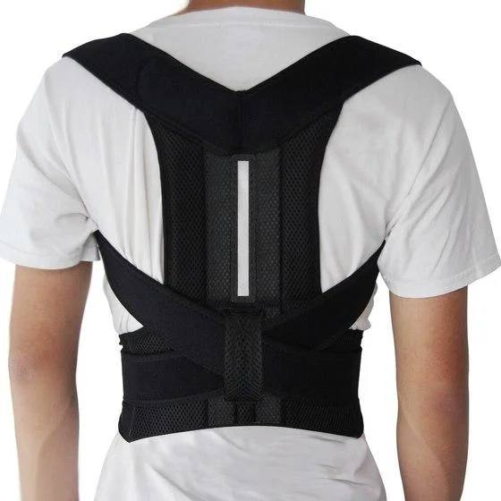
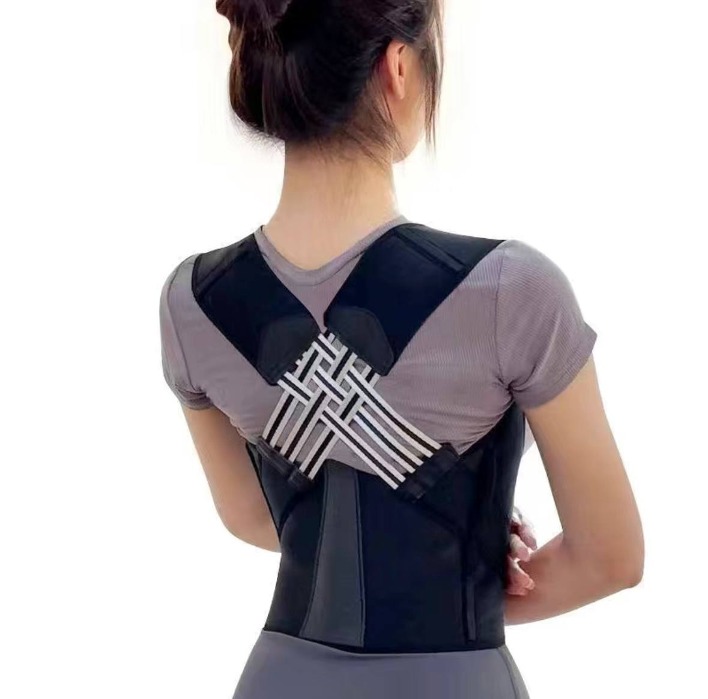
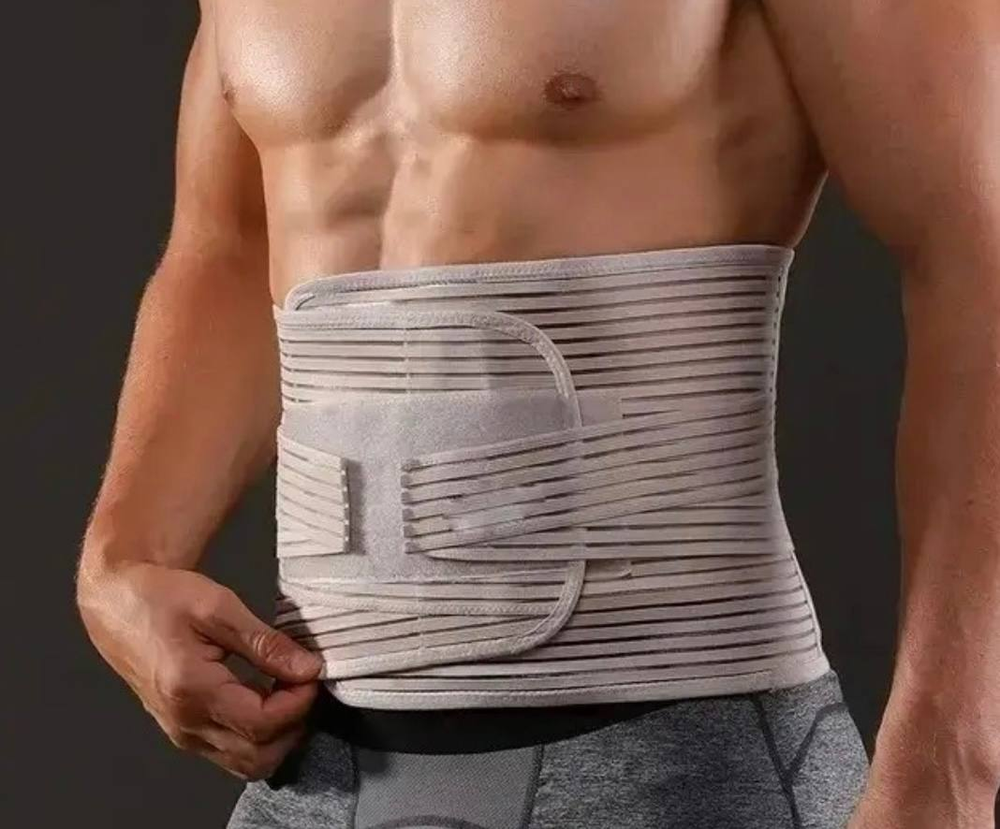
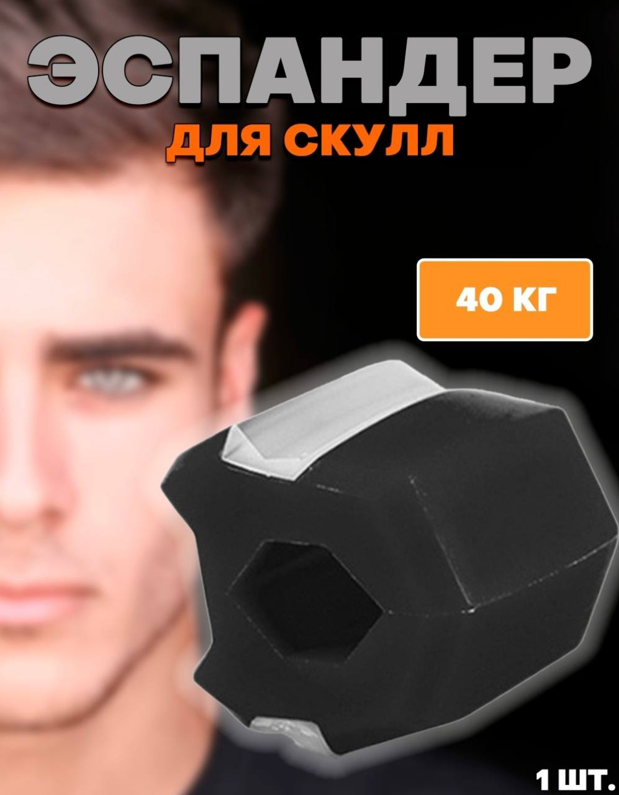

Қош келдіңіз🤝
Korset 1
✅Улучшает осанку:
Корректор осанки обеспечивает поддержку и выравнивание позвоночника, что со временем способствует улучшению осанки. Ношение корректора позволяет постепенно переучивать мышцы для поддержания правильной осанки.
✅Уменьшает боль и дискомфорт:
Плохая осанка может привести к дискомфорту и болям в шее, плечах и спине. Корректор помогает уменьшить дискомфорт, обеспечивая поддержку этих зон.
✅Повышает уверенность в себе:
Хорошая осанка ассоциируется с уверенностью и решительностью. Использование корректора позволяет улучшить осанку и чувствовать себя более уверенно.
✅Увеличивает жизненный объем легких:
Плохая осанка может ограничивать жизненный объем легких и снижать потребление кислорода.
С помощью корректора можно улучшить осанку и увеличить жизненную емкость легких, что приведет к улучшению общего состояния здоровья.
3000tg
Korset 2
✅ Боли в спине и поясничном отделе.
✅ Сутулость.
✅ Мышечные и суставные боли.
✅ Парестезии, возникающие в области поясницы и нижних конечностей.
✅ Ощущение напряжения и дискомфорта в спине.
✅ Спазмы.
✅ Напряжение поясничных мышц.
✅ Нарушение двигательной функции.
✅ Корректор успешно применяется для лечения и профилактики таких заболеваний, как кифоз, сколиоз, остеохондроз, межпозвоночные грыжи, артриты, артрозы, защемление позвоночных нервов, травматические повреждения позвоночного столба.
4000tg
Бандаж

Ортопедический бандаж - это изделие, которое может помочь при болях и других проблемах со спиной.🟢
Ортопедический корсет фиксирует и поддерживает позвоночник в физиологичном положении, снижает нагрузку на спину, усиливает тонус мышц спины и снимает напряжение.✔
Бандаж также может иметь согревающий эффект и стимулировать кровообращение.✔
Снимает боль
Бандаж для спины предназначен при болях в области пояснице: грыжи, артроз, артрит, и тд.✔
Также такое изделие поможет после травм, операций или родов.✔
Используйте бандаж в повседневной жизни и во время занятий спортом, он убережет вас от возможных травм.✔
Качественный материал
Пояс выполнен из гипоаллергенного и дышащего материала, поэтому кожа под ним не потеет.✔
Ребра жесткости усиливают поддержку и сохраняют форму корсета так, что он не скатывается и не сминается.✔
Застёжки-липучки помогают регулировать корсет под индивидуальные особенности и размеры.✔
Особенности бандажа❓:
Снимает нагрузку на позвоночник;♻
Умеренно фиксирует поясницу;♻
Облегчает реабилитацию после травм;♻
$
Эспандер для скулл
🟩Эспандер для скул – это специальный тренажер, который предназначен для развития и укрепления мышц плечевого пояса и спины. Он широко применяется в физических тренировках и реабилитации после травм и заболеваний. В этом тексте я хочу рассказать о пользе и вреде использования эспандера для скул.
🟢 Польза эспандера для скул :
✅ Укрепляет мышцы:
Использование эспандера помогает укрепить мышцы плечевого пояса, спины и рук, что способствует правильному положению позвоночника и предотвращает его перегрузку.
✅ Улучшает осанку:
Регулярные тренировки с эспандером способствуют правильному выравниванию позвоночника, что помогает улучшить осанку и предотвратить проблемы со спиной.
✅ Развивает силу и выносливость:
Работа с эспандером требует силы и выносливости, поэтому его использование помогает развить эти качества и улучшить общую физическую форму.
✅ Улучшает координацию:
Разнообразные упражнения с эспандером помогают развить координацию движений и баланс, что положительно сказывается на общей физической подготовке.
✅ Удобен в использовании:
Эспандер для скул легко транспортируется и может быть использован в любом месте: дома, в спортзале или на открытом воздухе.
1500tg